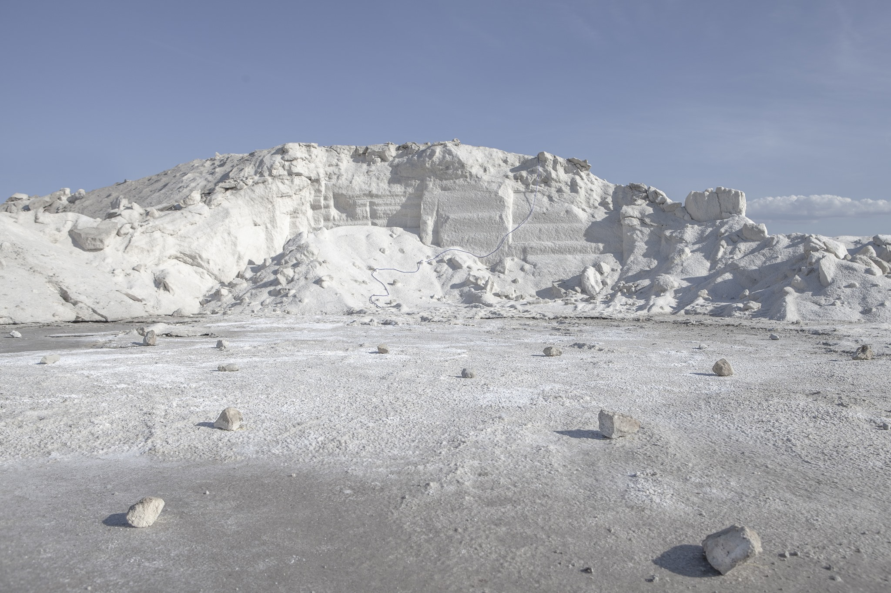

Elementi
Elementi è una rassegna dedicata alla musica contemporanea e alle arti performative, il cui intento è presentare al pubblico la trasversalità dei linguaggi contemporanei in relazione alla potenza emozionale di paesaggi simbolici.
Elementi è un progetto a cura di MAGMA e MU.